Zaprojektowaliśmy w CAD dedykowane uchwyty do przechowywania chwytaków (EOAT) robotów przemysłowych, dopasowane do geometrii narzędzi i układu chwytakowni klienta. Wykonanie detali w technologii druku 3D pozwoliło spełnić wszystkie wymagania przy zachowaniu optymalnego kosztu produkcji. Uporządkowane stanowisko skraca czas przezbrojeń i ogranicza ryzyko uszkodzenia chwytaków.


Serwis wtryskarek i robotów przemysłowych
PRZYWRACAMY MASZYNY
DO ŻYCIA
I WZNAWIAMY PRODUKCJĘ
Diagnostyka i naprawa wtryskarek, robotów przemysłowych oraz urządzeń peryferyjnych. Relokacje, uruchomienia, wsparcie R&D, a także projektowanie CAD, druk 3D z tworzyw technicznych i frezowanie CNC — dla zakładów przetwórstwa tworzyw sztucznych w całej Polsce.